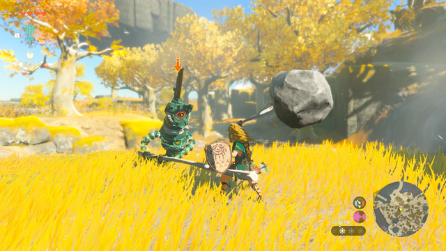

图：时之神殿紧闭的大门——封印泛着橙光，手臂没有力气就推不开。
先说结论：一扇门，四座神庙
开场在初始空岛醒来，跟着指引走到时之神殿，门推不开。劳鲁的残影告诉你：手臂要恢复力量，得先跑完岛上三座神庙——乌可乌侯拿究极手、伊恩伊萨拿余料建造、古塔恩巴奇拿通天术。三座跑完回神殿开门，门后还有倒转乾坤与第四座神庙（纳裘亚哈），四个祝福之光换一颗心，才能推开内门、跳下海拉鲁。全程没有滑翔伞，跳岛之前先看好落点。
| 阶段 | 要做的事 |
|---|---|
| 第一段：三座教学神庙 | 乌可乌侯、伊恩伊萨、古塔恩巴奇；拿齐究极手、余料建造、通天术 |
| 第二段：回神殿开门 | 推开时之神殿大门，学会倒转乾坤 |
| 第三段：第四座神庙 | 从觉醒室走齿轮通道进纳裘亚哈，拿第四个祝福之光 |
| 第四段：换心离岛 | 女神像处换一颗心，推开内门，跳下海拉鲁 |
接取与奖励
| 项目 | 内容 |
|---|---|
| 接取 | 主线「寻找塞尔达公主」进行中，在时之神殿门口调查发光的大门，自动接取 |
| 位置 | 初始空岛 · 时之神殿，约 0452, -0859, 1450 |
| 奖励 | 究极手、余料建造、通天术、能量电池 |
| 后续 | 开门后学会倒转乾坤；第四座神庙后换到第四颗心 |
这篇是主线第 1 篇，讲的是开场教学全流程。开场剧情（城堡地底、醒来、拿普尔亚平板）属于前置主线「寻找塞尔达公主」，这里只写从时之神殿大门开始的部分。
三座神庙总览
三座神庙的位置劳鲁会在你拿到究极手后指给你：用普尔亚平板的望远镜对着神庙方向打标记，地图上就有了。顺序建议按乌可乌侯 → 伊恩伊萨 → 古塔恩巴奇走，绕岛逆时针一圈，路上练到的能力正好是下一段路要用的。
| 顺序 | 神庙 | 能力 | 坐标（约） | 要点 |
|---|---|---|---|---|
| 1 | 乌可乌侯神庙 | 究极手 | 0274, -0914, 1460 | 神殿西边山上；搭桥、吊钩滑轨 |
| 2 | 伊恩伊萨神庙 | 余料建造 | 0024, -1503, 1408 | 神殿西南；岩石砸墙、火焰果烧藤叶拿钥匙 |
| 3 | 古塔恩巴奇神庙 | 通天术 | 0709, -1383, 1584 | 东南边雪山；先做耐寒料理，冰壁爬不上去走树根 |

图：初始空岛全景——时之神殿在左边，三座神庙散布在岛的各处，逆时针绕一圈正好跑完。
神庙门口调查发光标记能解锁传送点，但快速旅行要等劳鲁教了之后才能用，前面几段路只能靠走。
第一步：乌可乌侯神庙——究极手
从时之神殿往西走，上山就是乌可乌侯神庙。进门就拿到究极手：抓住东西、移动、旋转、粘合，整个游戏的建造玩法都从这里开始。
1搭桥。用究极手把石板铺在缺口上当桥走过去；缺口太宽就把两块石板接成长桥。
2吊钩滑轨。把木板和吊钩粘在一起，钩子朝上挂到轨道上，站上木板滑到对岸。
3拿祝福之光。到终点调查，拿到第一个祝福之光。出门后劳鲁让你用望远镜标出另外两座神庙的位置。

图：究极手——抓住、移动、粘合，木板加轮子加风扇就能拼出一辆车，后面全程都靠它。
第二步：伊恩伊萨神庙——余料建造
往神殿西南走，先过一道大湖：一个精力轮游不过去，砍树做船（原木加风帆）渡过去，再去伊恩伊萨神庙。进门就拿到余料建造：把材料贴到武器、盾、箭上，武器立刻不一样。
1砸墙。拿一把生锈的大剑，把岩石余料上去，砸碎石墙和挡路的石柱。
2拿钥匙。右边房间拿弓和火焰果，箭上附火焰果，射墙上的藤叶，藏钥匙的宝箱会掉下来。开箱拿小钥匙开门。
3打魔像队长。用火焰果箭射它脚下的枯叶，着火烧掉它大半血，再补刀；不要近战硬砸，它一下能打掉一颗心还多。打掉后会掉落它那把余料了巨石的木棒，顺手捡上。
4拿祝福之光与能量电池。到终点拿第二个祝福之光；出门后管家魔像会送你一个能量电池，用来驱动风扇这类左纳乌装置。

图：余料建造——石头贴到武器上就能砸墙，火焰果贴到箭上就能烧藤叶，材料怎么贴全看你要对付什么。
湖畔洞窟外有个大水塘：两根原木并排粘好，两侧各贴一个风扇，站上去敲一下风扇，木筏就往对岸走了。矿洞里坐轨道车出来后，在出口附近的空地有装置扭蛋机（出风扇、火焰喷射器、便携锅），投左纳乌电荷换胶囊备用；矿洞里的挖矿魔像会给风扇胶囊。
第三步：古塔恩巴奇神庙——通天术
最后一座在东南边雪山上。上去之前先做耐寒料理：暖暖草果加肉或蘑菇煮一锅，1 级耐寒就够走这段路。雪山冰壁爬不上去，别在冰面上耗精力，穿过无尽的洞窟，出洞后回头爬洞口边的大树根上去。
1穿天花板。进神庙拿通天术：站在能穿透的天花板下面用，整个人会从上面钻出来。
2放平台。悬空平台那处先切断绳索，让平台落下来，再从下面穿上去。
3拿祝福之光。顺着移动平台一路往上，到终点拿第三个祝福之光。

图：时之神殿——三座神庙跑完就回这里，门后就是倒转乾坤与第四座神庙。
出神庙后先去出口旁的大树干里拿防寒服（古代暖暖护腿，穿上就不用再吃耐寒料理）；翼在东边再往北的跑道上（雪地里那台扭蛋机也能出翼），乘翼滑翔回时之神殿，飞之前先看好降落方向，翼约一分钟后消失（翼身开始变绿闪烁就是要消失的信号）。
开门之后：倒转乾坤与第四座神庙
三座神庙跑完，乘翼滑翔回时之神殿（或步行回去），推门，门开了。进门见到塞尔达的残影，学会倒转乾坤：让物体的运动倒着来一遍。这时快速旅行还不能用，要到推内门失败、劳鲁出现后才学会。
1学倒转乾坤。调查房间尽头发光的大石头，塞尔达的残影教你倒转乾坤，然后消失。
2推内门。再往里走推内门，推不开。劳鲁出现，说岛上还有第四座神庙，并教你快速旅行。
3回觉醒室。传送回开场醒来的觉醒室，在房间里用通天术上到高处，对转动的齿轮用倒转乾坤，穿过齿轮通道。
4纳裘亚哈神庙。沿通道进去就是第四座神庙。木筏那段等木筏漂近时先对它用倒转乾坤，再跳上去，筏会逆流载你过去；过河后同样办法过第二段木筏，它会载你逆流上瀑布。双指针大门那处等两根指针重合时倒转其中一根，让它们保持同向重合，趁门开着通过。
5拿第四个祝福之光。到终点调查，四个祝福之光齐了。
换心、开内门、离开空岛
回时之神殿的女神像处，用四个祝福之光换一颗心之容器，现在一共四颗心。再推内门，这次能推开了。沿路出去走到岛边，从高处跳下。
容易翻车的地方
- 跑完一座神庙就回神殿推门——门不会开，三座全跑完才行。
- 雪山不做耐寒料理就往上爬——冻掉血，半路就得折返。
- 冰壁上硬爬——爬不上去还耗精力，走洞口旁的树根。
- 第四座神庙不知道在哪——先回神殿拿倒转乾坤，再从觉醒室走齿轮通道。
- 祝福之光换了精力忘了换心——内门要四颗心才开，先换心。
- 跳岛往石头上扎——没滑翔伞，落点选水面。
一句话总结
三座神庙拿齐究极手、余料建造、通天术，回神殿开门学倒转乾坤，再跑第四座神庙纳裘亚哈，四个祝福之光换一颗心，推开内门、跳下海拉鲁——主线从这里才真正开始。